CPSC 203, 2025 W2
April 9, 2026
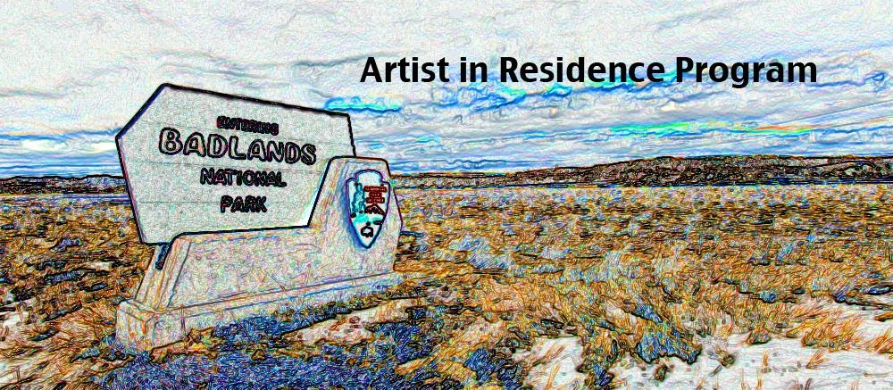
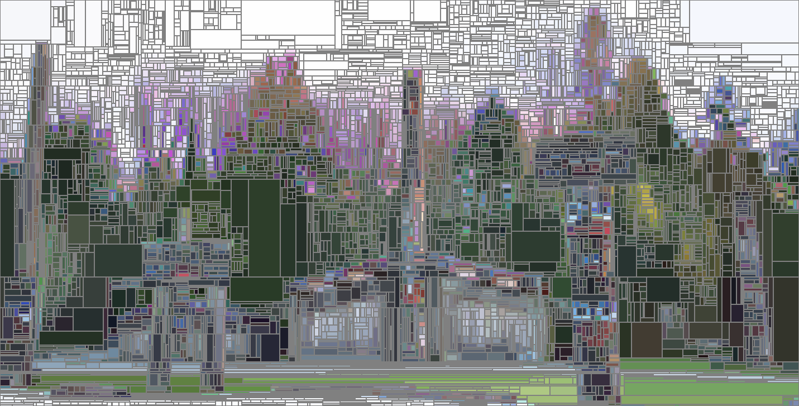
“What you need are superpixels!”
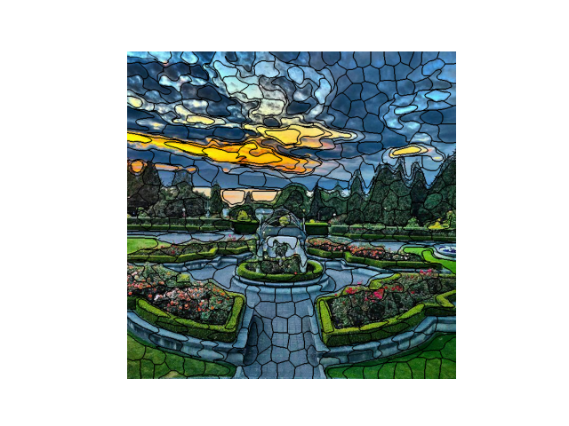
Equal sized, continuous, compact regions that honor boundaries.
“How will you know if you’ve done a good job?”
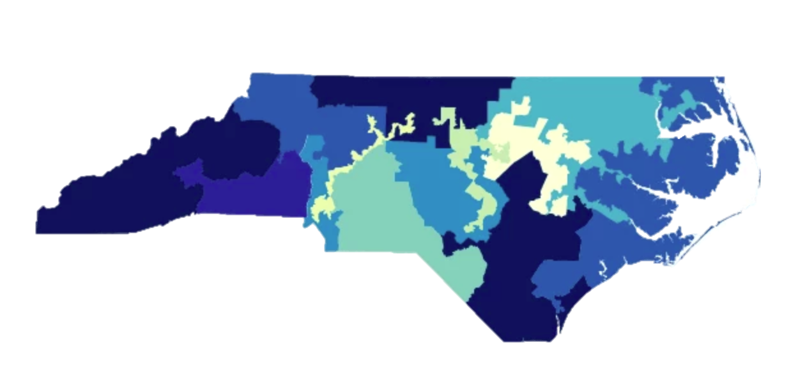
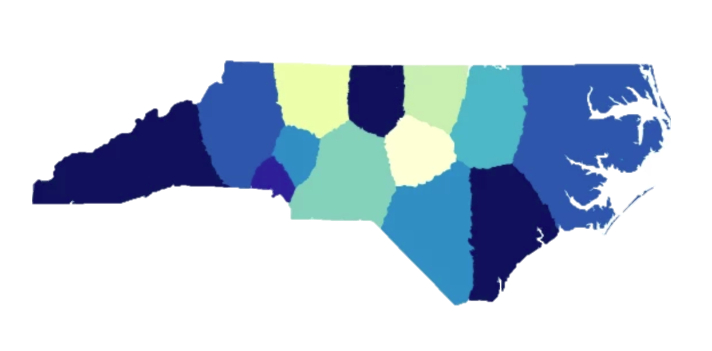
Equal sized, continuous, compact regions?
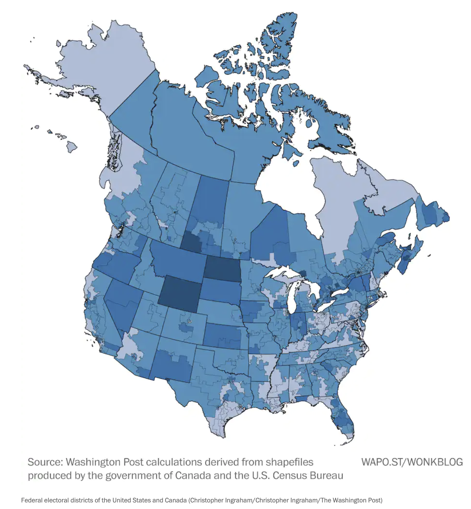
In 1964 a law was passed requiring each province to form an independent panel to draw boundaries.
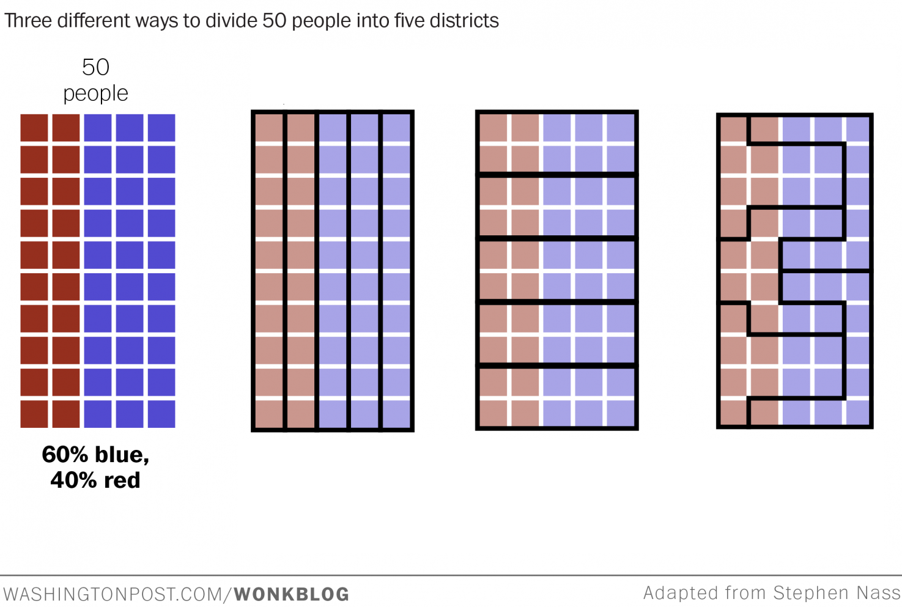
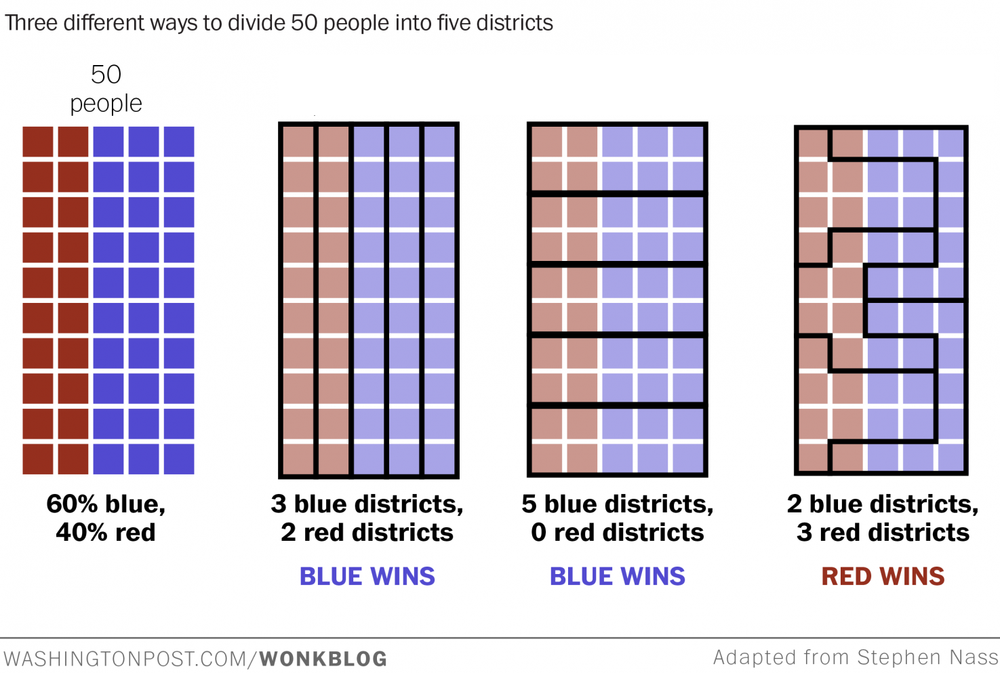
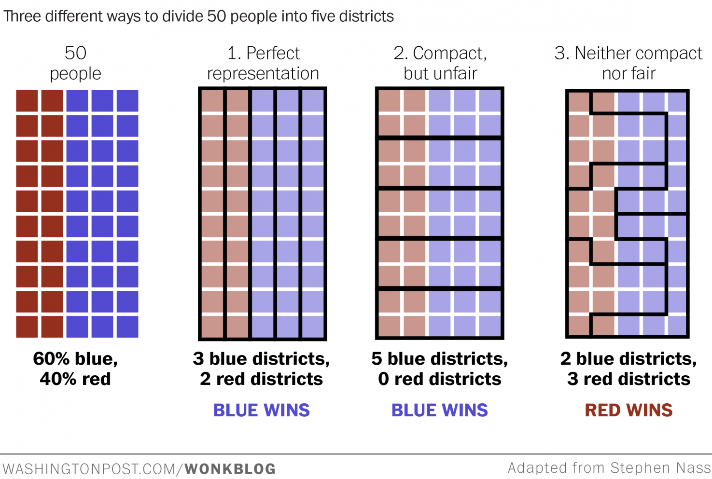
For each district, count wasted votes:
Observe:
Suggests a simple metric of quality!
For each district:
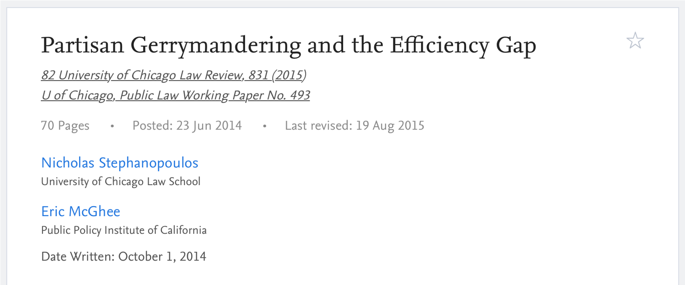
What should we do with the gap?
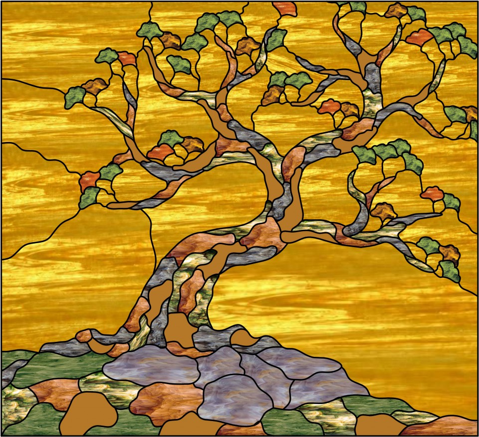
→
←
Diverse teams improve results:
Cognitive Diversity and Speed: cognitively diverse teams solve problems up to 3x faster and consider 48% more solutions (HBR/SA).
Reduced Groupthink and Bias: groups with diverse members are more likely to correct errors and avoid groupthink, making them more accurate in decisions (NLI).
Innovation Boost: cognitive diversity can improve team innovation by 20% (JoAP).
Inherent diversity: characteristics we’re born with or into.
Acquired diversity: the breadth of our interests, experiences, and connections.
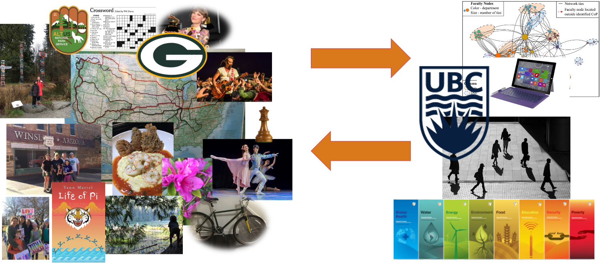
Thank you for being so bright and so fun to teach.
Thank you for all the ways you’re going to make the world a better place.